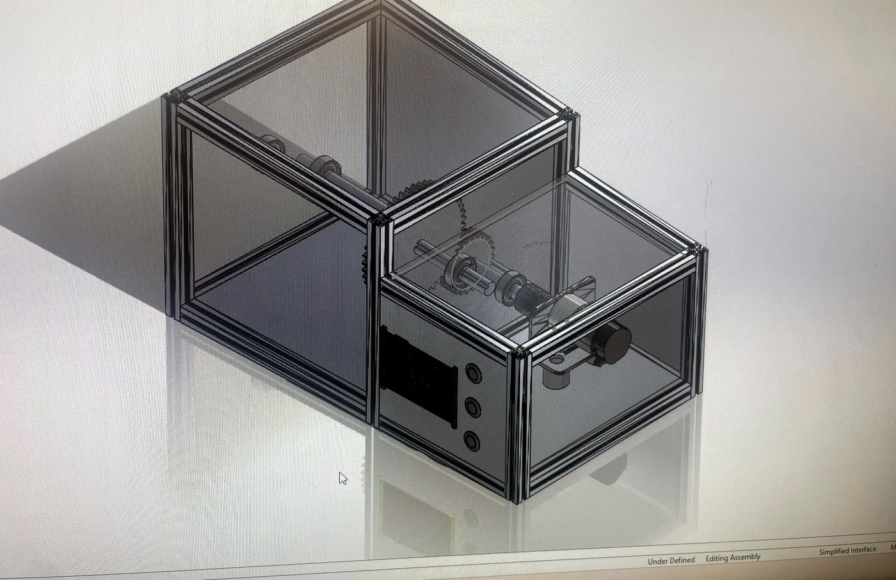
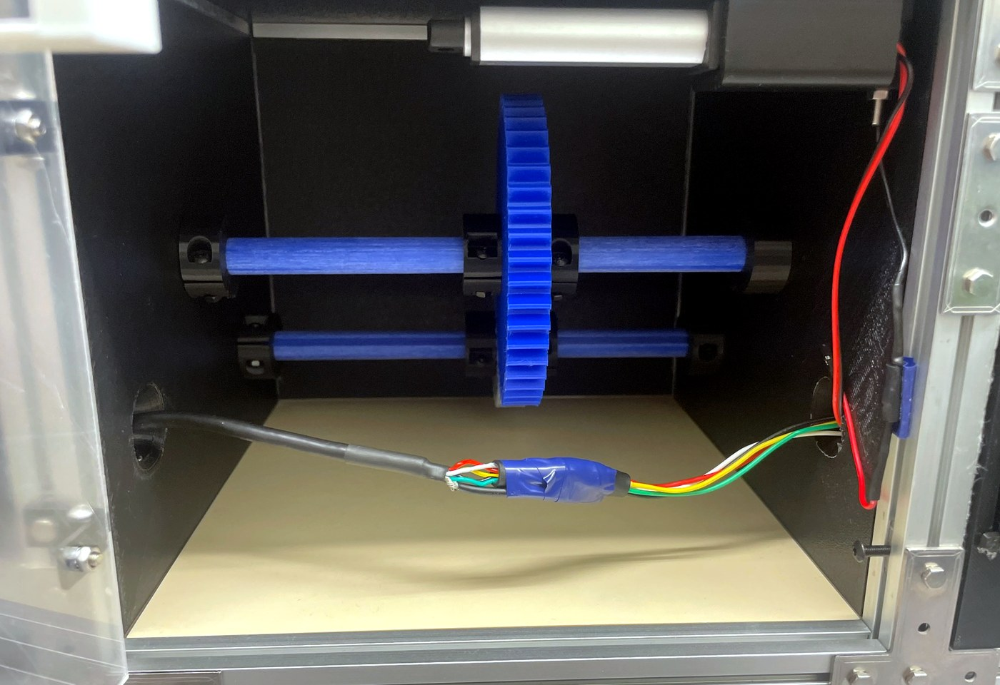
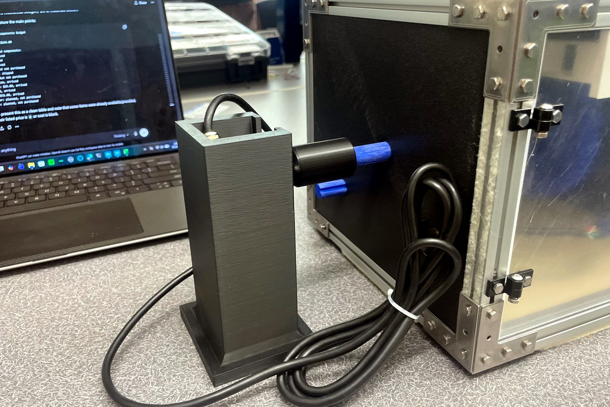
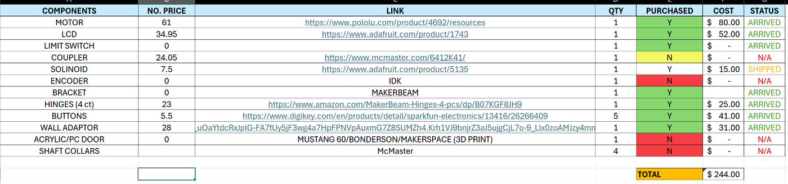

Mechanical System Overview
The physical system is a motorized gearbox demonstration unit housed in an aluminum extrusion frame with panels, a clear door, hinges, and a front user interface section. CAD design files were provided as a SolidWorks/CAD package containing beams/extrusions, enclosure faces, mounting plates, gears, shafts, couplers, latch geometry, button/LCD features, and assembly files.


Major Mechanical Elements
Frame and Panels
MakerBeam-style aluminum extrusion forms the main frame. Opaque and transparent panels enclose the drivetrain while allowing the gear train to be viewed during operation.
Door and Hinges
The clear door provides visibility and access. Hinges and latch/lock hardware support the safety interlock strategy, where the gearbox should only run when the door switch indicates closed.
Gear Train and Shafts
Blue shafts, collars, bearings/supports, and gear components form the drivetrain. Encoder feedback is used to monitor speed on the input/motor side and output shaft side.
Motor Fixture
An external motor and coupler/shaft fixture connect into the gearbox, allowing the controller to drive the gear train while keeping the motor accessible during testing.


Bill of Materials / Budget
The BOM was updated so all listed components are marked purchased and arrived. The originally documented total cost is preserved as $244.00.
| Component | Qty | Status | Notes |
|---|---|---|---|
| Motor | 1 | Purchased / Arrived | Main drivetrain actuator. |
| LCD | 1 | Purchased / Arrived | Adafruit TFT display used for user feedback. |
| Limit/Reed Switch | 1 | Purchased / Arrived | Door-closed safety input. |
| Coupler | 1 | Purchased / Arrived | Connects motor fixture to shaft. |
| Solenoid / Linear Actuator | 1 | Purchased / Arrived | Lock/unlock mechanism. |
| Encoder | 1+ | Purchased / Arrived | Speed feedback sensors. |
| Bracket / MakerBeam | 1 | Purchased / Arrived | Structural mounting hardware. |
| Hinges | 4 | Purchased / Arrived | Door hinge hardware. |
| Buttons | 5 | Purchased / Arrived | Three used for the interface; extras available. |
| Wall Adapter | 1 | Purchased / Arrived | External power source. |
| Acrylic/PC Door | 1 | Purchased / Arrived | Transparent safety/access panel. |
| Shaft Collars | 4 | Purchased / Arrived | Axial shaft positioning. |
